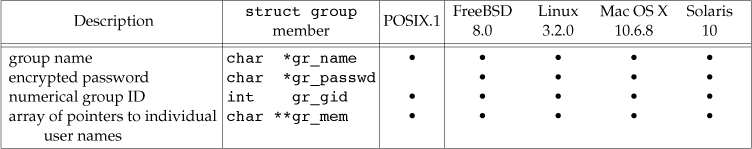
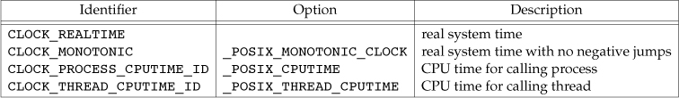
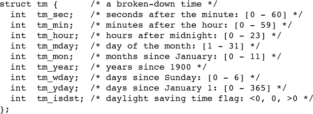

file /etc/passwd contains fields:
user name
password
UID
GID
comment field
home directory
* login shell field #/dev/null, device
Don't store passwords, and store shadow of them. Using one-way function to generate shadow of password. 
/etc/services/etc/protocols/etc/networksFile utmp keeps track of all users currently logged in.
File wtmp keeps track of all logins and logouts
Number of seconds sice UTC
#include <time.h> time_t time(time_t *calptr); #Returns: value of time if OK, –1 on error
Real-time extensions to POSIX.1 added support for multiple system clocks.
A clock is identified by clockid_t type.

The clock_gettime function get the time of specified clock.
#include <sys/time.h> int clock_gettime(clockid_t clock_id, struct timespec *tsp);
struct timespec expresses time values in terms of seconds and nanoseconds.
Function int clock_getres(clockid_t clock_id, struct timespec *tsp) return resolution of a specified clock.
Function int gettimeofday(struct timeval *restrict tp, void *restrict tzp) is now obsolescent(deprecated).
#include <time.h> struct tm *gmtime(const time_t *calptr); struct tm *localtime(const time_t *calptr); time_t mktime(struct tm *tmptr);
